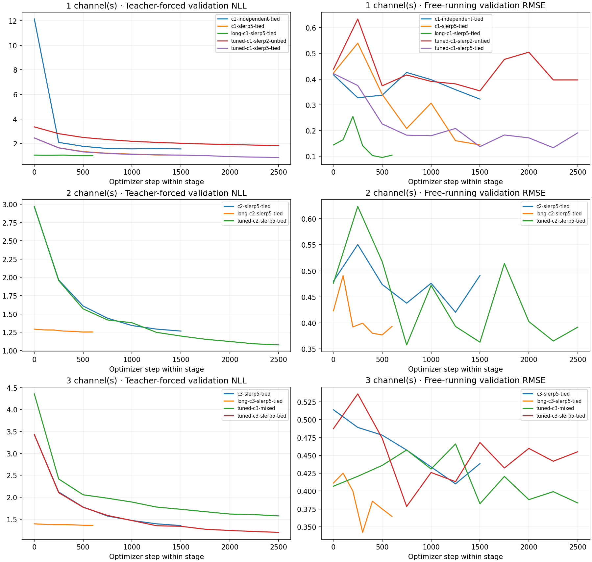

Best checkpoint selected on validation rollout RMSE. Table uses disjoint test seeds. One seed per configuration; not a statistical ranking.

| run | parameters | teacher_nll | one_step_rmse | rollout_rmse | persistence_rmse | linear_rmse | single_stream_horizon_ms_median | rmse_8 | rmse_16 |
|---|---|---|---|---|---|---|---|---|---|
| c1-independent-tied | 55536 | 1.46864 | 0.01803 | 0.39607 | 0.46095 | 0.86287 | 54.99973 | 0.14074 | 0.2704 |
| c1-slerp5-tied | 49633 | 1.03752 | 0.0055 | 0.20155 | 0.46095 | 0.86287 | 65.91413 | 0.06013 | 0.1395 |
| c2-slerp5-tied | 49874 | 1.29571 | 0.00764 | 0.43528 | 0.46373 | 0.91481 | 104.75788 | 0.10872 | 0.25018 |
| c3-slerp5-tied | 50115 | 1.4038 | 0.01141 | 0.41142 | 0.4478 | 0.93495 | 73.00677 | 0.14182 | 0.28218 |
| long-c1-slerp5-tied | 49633 | 1.00482 | 0.00545 | 0.17189 | 0.46095 | 0.86287 | 176.81136 | 0.05015 | 0.1022 |
| long-c2-slerp5-tied | 49874 | 1.26345 | 0.00817 | 0.36612 | 0.46373 | 0.91481 | 98.88801 | 0.09887 | 0.21791 |
| long-c3-slerp5-tied | 50115 | 1.38099 | 0.0119 | 0.37452 | 0.4478 | 0.93495 | 135.68364 | 0.11909 | 0.23781 |
| tuned-c1-slerp2-untied | 49586 | 2.03147 | 0.01006 | 0.38555 | 0.46095 | 0.86287 | 72.1745 | 0.09081 | 0.1727 |
| tuned-c1-slerp5-tied | 49633 | 0.85736 | 0.00478 | 0.17383 | 0.46095 | 0.86287 | 70.10741 | 0.05723 | 0.10136 |
| tuned-c2-slerp5-tied | 49874 | 1.41884 | 0.01328 | 0.42266 | 0.46373 | 0.91481 | 96.34568 | 0.13548 | 0.29133 |
| tuned-c3-mixed | 56068 | 1.7288 | 0.01918 | 0.42709 | 0.4478 | 0.93495 | 59.60699 | 0.14928 | 0.29792 |
| tuned-c3-slerp5-tied | 50115 | 1.59088 | 0.01619 | 0.38626 | 0.4478 | 0.93495 | 78.64837 | 0.16405 | 0.30078 |